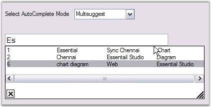
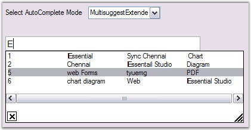

This section illustrates the solutions for various task-based queries about the control.
This is achieved by calling the SetTableData() method as follows. This method sets internal table data based on AutoComplete.DataSource property.
|
[C#]
DataTable dt; private void Form1_Load(object sender, System.EventArgs e) { dt = new DataTable("select"); dt.Columns.Add("Countries"); dt.Columns.Add("states"); dt.Rows.Add(new object[] { "NorthCarolina" }); dt.Rows.Add(new object[] { "India " }); dt.Rows.Add(new object[] { "New York " }); dt.Rows.Add(new object[] { "Washington " }); dt.Rows.Add(new object[] { "London" }); dt.Rows.Add(new object[] { "Canada" }); autoComplete1.DataSource = dt; }
private void button1_Click(object sender, System.EventArgs e) { dt.Rows.Add(new object[] { "new1" }); dt.Rows.Add(new object[] { "new2" });
//sets the internal table data based on the AutoComplete.DataSource property. this.autoComplete1.SetTableData(); } |
|
[VB.NET]
Private dt As DataTable
Private Sub Form1_Load(ByVal sender As Object, ByVal e As System.EventArgs) dt = New DataTable("select") dt.Columns.Add("Countries") dt.Columns.Add("states") dt.Rows.Add(New Object() {"NorthCarolina"}) dt.Rows.Add(New Object() {"India "}) dt.Rows.Add(New Object() {"New York "}) dt.Rows.Add(New Object() {"Washington "}) dt.Rows.Add(New Object() {"London"}) dt.Rows.Add(New Object() {"Canada"}) autoComplete1.DataSource = dt End Sub
Private Sub button1_Click(ByVal sender As Object, ByVal e As System.EventArgs) dt.Rows.Add(New Object() {"new1"}) dt.Rows.Add(New Object() {"new2"}) Me.autoComplete1.SetTableData() End Sub |
You can show the autocomplete popup programmatically using the following code.
|
[C#]
this.autoComplete1.AutoCompletePopup.ParentControl = this.textBox1; this.autoComplete1.AutoCompletePopup.ShowPopup(Point.Empty); |
|
[VB.NET]
Me.autoComplete1.AutoCompletePopup.ParentControl = Me.textBox1 Me.autoComplete1.AutoCompletePopup.ShowPopup(Point.Empty) |
To remove the default selection in autocomplete drop-down, set SelectedIndex property to -1 inside DropdownDisplayed event of the autocomplete control as follows.
|
[C#]
private void autoComplete1_DropDownDisplayed(object sender, EventArgs e) { this.autoComplete1.SelectedIndex = -1; } |
|
[VB.NET]
Private Sub autoComplete1_DropDownDisplayed(ByVal sender As Object, ByVal e As EventArgs) Me.autoComplete1.SelectedIndex = -1 End Sub |
You can delete items in the list at run time by pressing the Delete Key, by enabling AllowListDelete property.
|
[C#]
this.autoComplete1.AllowListDelete = true; |
|
[VB.NET]
Me.autoComplete1.AllowListDelete = True |
We can delete the history items persisted by an AutoCompleteControl by calling AutoComplete.ResetHistory() method.
|
[C#]
this.autoComplete1.ResetHistory(); |
|
[VB.NET]
Me.autoComplete1.ResetHistory() |
AutoComplete control can be used in an UserControl by setting the parent form of the User Control to the parent form property of the AutoComplete Control.
|
[C#]
private void UserControl1_Load(object sender, System.EventArgs e) { this.autoComplete1.ParentForm = this.ParentForm; this.autoComplete1.DataSource = this.items; } |
|
[VB.NET]
Private Sub UserControl1_Load(ByVal sender As Object, ByVal e As System.EventArgs) Me.autoComplete1.ParentForm = Me.ParentForm Me.autoComplete1.DataSource = Me.items End Sub |
Follow the below steps to implement AutoComplete feature with RichTextBox control.
1. Implement the IEditControlsEmbed interface in a RichTextBox class which, will enable the AutoComplete functionality for the RichTextBox control.
|
[C#]
public class MyRichTextBox : System.Windows.Forms.RichTextBox, IEditControlsEmbed { // Returns the active RichTextBox control. public Control GetActiveEditControl(IEditControlsEmbedListener listener) { return (Control)this; }
} |
|
[VB.NET]
Public Class MyRichTextBox Inherits System.Windows.Forms.RichTextBox Implements IEditControlsEmbed
' Returns the active RichTextBox control.
Public Function GetActiveEditControl(ByVal listener As IEditControlsEmbedListener) As Control
Return CType(Me, Control)
End Function
End Class |
2. Drag and drop the RichTextBox control and the AutoComplete control to a form.
|
[C#]
// Initialization Syncfusion.Windows.Forms.Tools.AutoComplete autoComplete1= new Syncfusion.Windows.Forms.Tools.AutoComplete();; MyRichTextBox richTextBox1= new MyRichTextBox(); |
|
[VB.NET]
' Initialization Dim autoComplete1
As
Syncfusion.Windows.Forms.Tools.AutoComplete = New
Syncfusion.Windows.Forms.Tools.AutoComplete |
3. The AutoComplete control can take an external data source (any data source that implements IList or IListSource) for its history list. Here we have set a StringCollection as the DataSource.
4. When this property is set, the AutoComplete control will initialize itself with the data source and use that as the basis for its matching routines. For example, if you have a DataSet with a list of names of the States in the US and if you specify that as the DataSource, then the AutoComplete control will display all the matches from within these names when the user types in the target edit control.
|
[C#]
// Sets the DataSource. StringCollection liste = new StringCollection(); liste.Add("New Jersey"); liste.Add("North Carolina"); liste.Add("North Dakota"); liste.Add("New York"); liste.Add("New Mexico"); autoComplete1.DataSource = liste; |
|
[VB.NET]
' Sets the DataSource. Dim liste As StringCollection =
New StringCollection
|
5. Set the AutoCompleteonautoComplete1 property in the properties page to either AutoSuggest, AutoAppend or Both.
6. SetAutoComplete is the extended property for the AutoComplete property which, will be called by the framework when the AutoComplete property is set on any control. When using the AutoComplete control programmatically, you need to use this method to add and remove auto completion for the RichTextBox control.
|
[C#]
this.autoComplete1.SetAutoComplete(this.richTextBox1,Syncfusion.Windows.Forms.Tools.AutoCompleteModes.AutoSuggest); |
|
[VB.NET]
Me.autoComplete1.SetAutoComplete(Me.richTextBox1,Syncfusion.Windows.Forms.Tools.AutoCompleteModes.AutoSuggest) |
7. The RichTextBox will be enabled with the AutoComplete functionality.
Matching items in multiple columns is possible using the AutoComplete control. We need to set the AutoCompleteModes to MultiSuggest or MultiExtended mode for this.
MultiSuggest - Possible matches from Multiple columns for the current content of the Active edit control, will be presented in a form of a popup window with a selectable list of matches. MultiSuggest mode is an extended mode of AutoSuggest. On selecting this mode, user will be able to get the matching items in the active edit control from all the columns.
|
[C#]
this.autoComplete1.SetAutoComplete(this.textBoxExt1 , Syncfusion.Windows.Forms.Tools.AutoCompleteModes.MultiSuggest); |
|
[VB.NET]
Me.autoComplete1.SetAutoComplete(Me.textBoxExt1 , Syncfusion.Windows.Forms.Tools.AutoCompleteModes.MultiSuggest) |

Figure 129: MultiSuggest Mode
MultiSuggestExtended - This mode highlights all possible matches from Multiple columns, for the current content of the Active edit control, presented in the form of a popup window, with a selectable list of matches.
|
[C#]
this.autoComplete1.SetAutoComplete(this.textBoxExt1 , Syncfusion.Windows.Forms.Tools.AutoCompleteModes.MultiSuggestExtended); |
|
[VB.NET]
Me.autoComplete1.SetAutoComplete(Me.textBoxExt1 , Syncfusion.Windows.Forms.Tools.AutoCompleteModes.MultiSuggestExtended) |

Figure 130: MultiSuggestExtended Mode
This can be done using AutoCompleteItemSelected Event which is discussed in External Datasource topic.